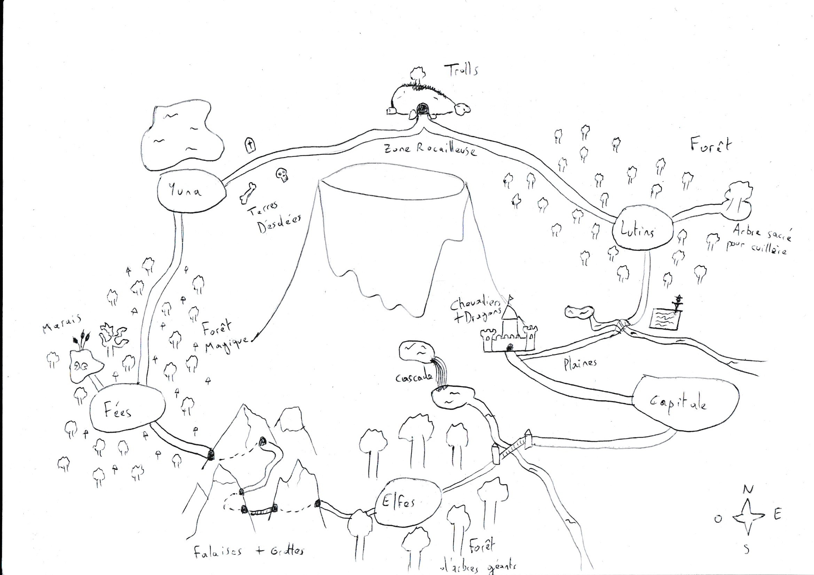
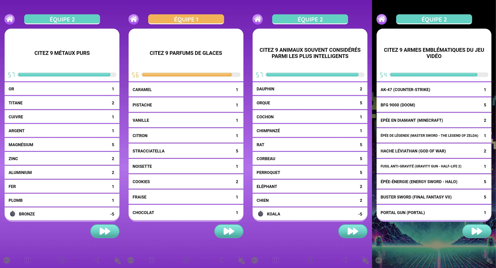

Mes Projets [WIP]

Circuit "Nevers GP", E-GAMES SIIVim Tour by Nevers
Trackmania
Le circuit "Nevers GP" est l'un des 6 circuits que j'ai conçu pour la dernière édition du tournoi en ligne "E-GAMES SIIVim Tour", organisé par la ville de Nevers sur le jeu Trackmania en Février 2026, et administré par l'association Springs E-Sport dont je fais partie.
L'évènement a été joué par près de 100 joueurs, et a été diffusé sur Twitch, atteignant plus de 70 spectateurs simulatnés.
Ce circuit était celui de la finale, et était donc particulièrement important, m'offrant un challenge intéressant lors de sa conception.

Le Royaume d'Ailm
Partie Game Design
"Le Royaume d'Ailm" est un jeu mobile thérapeutique porté par l'association "Burns and Smiles" et développé par Alten, dont le but est d'accompagner de manière ludique les enfants victimes de brûlures pendant leur parcours de soins.
En tant que consultant Alten, j'ai eu l'occasion de travailler sur ce projet en premier lieu en tant que Game Designer, en participant à la conceptualisation du jeu, de son scénario et de ses mécaniques, en passant par les choix de design et techniques.
Ce projet a été très enrichissant, car il s'agissait de mon premier jeu vidéo, d'autant plus que les contraintes quant à sa réalisation étaient importantes, étant donné l'aspect thérapeutique associé.

Le Royaume d'Ailm
Partie Level Design
"Le Royaume d'Ailm" est un jeu mobile thérapeutique porté par l'association "Burns and Smiles", dont le but est d'accompagner de manière ludique les enfants victimes de brûlures pendant leur parcours de soins.
Après avoir d'abord participé au Game Design et à la conceptualisation du jeu, j'ai ensuite pris le rôle de Level Designer en imaginant l'univers du jeu et en concevant de nombreuses cartes de l'histoire.Etant données les contraintes liées à l'aspect thérapeutique de l'application, il m'a fallu être vigilant sur le contenu à montrer et rester attentif aux retours afin de proposer un univers à la fois immersif et adapté au publc cible. Voir les détails

Devineuf
"Devineuf" est un jeu mobile de quiz de culture générale en multijoueur local, dont le but est de trouver pour chaque question 9 réponses valides, chacune rapportant un certain nombre de points.
Après avoir découvert le jeu par hasard avec des amis, et suite à plusieurs échanges et propositions auprès de l'équipe de développeurs du jeu via leur serveur discord, j'ai fini par rejoindre l'équipe de rédaction de l'application, me permettant d'ajouter mes propres questions au sein de la base de données.
Aujourd'hui, avec près de 400 questions à mon nom sur les 2000 au total dans la base de données, et quelques idées de fonctionnalités mises en place par l'équipe, je fais partie des contributeurs les plus réguliers sur l'application.